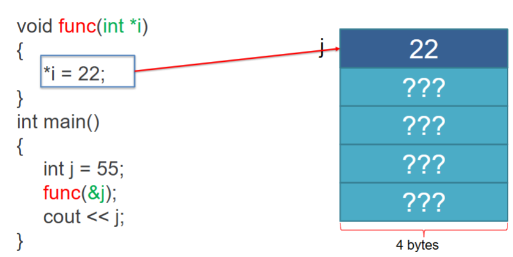
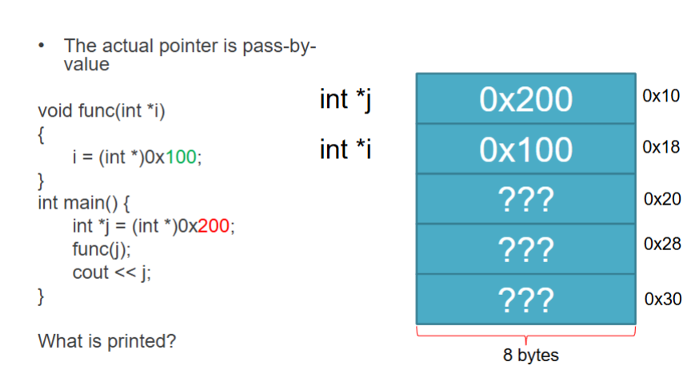

Pointers
What is a Pointer?
- Pointers store a memory location
- "pointer" = these "point" to a memory location.
- All pointers have the same size:
- 64-bit machine: up to 8-bytes (64-bits)
- 32-bit machine: up to 4-bytes (32-bits)
- Actual number of bits used for addresses depends on the size of RAM
Why are pointers important?
- Many languages do not have pointer variables
- Java, Python, C# (limited support in unsafe mode)
- Reliance on an automated system called garbage collection
- Programmer has limited control over memory management
- C and C++ give full control over memory management to the programmer
- Advantage: much more efficient, faster programs
- Disadvantage: increased likelihood of errors
- Memory leaks
- Buffer overflow susceptible code(?)
Pointer Syntax
- Declaration: type* name;
- type: the data type of the value stored at the memory location
- *: indicates that this variable is a pointer
- name: the name of the pointer variable
- Example: int* ptr;
Address-of Syntax
- To get the memory address of a variable, we use the address-of operator (&)
- Example: int x = 5; int* ptr = &x;
int k = 22;
cout << k; // prints 22 (value of integer k)
cout << &k; // prints memory address of k
Using Pointers
We use the * in 2 ways: to declare pointers, and dereference
int k;
int *ptr_k; // When declaring: Asterisk makes a pointer
ptr_k = &k; // Puts memory address of k into pointer ptr_k
*ptr_k = 771; // Using the * when getting/setting is dereference operator. This puts the value 771 into
// the variable located by ptr_k.
printf("%d\n", k); // prints 771
Allocating New Memory (C)
Malloc() allocates memory (some number of bytes). Sizeof() just tells malloc() how many bytes to allocate.
int *ptr; // declaring a pointer
ptr = (int*)malloc(sizeof(int)); // creates a new "nameless" integer in memory that we can only access via pointer.
*ptr = 60; // deference pointer to give that new integer a value.
printf("%d\n", *ptr); // prints 60
Malloc vs Calloc
malloc() and calloc() are slightly different ways to allocate memory in C
- malloc() ("memory allocation")
- Allocates one block of memory
- Memory is uninitialized (contains garbage values)
- Faster
- You must manually compute total size.
- calloc() ("contiguous allocation")
- ptr = (cast-type*)calloc(n, elment-size)
- (ex.) ptr = (int*) calloc(5, sizeof(int));
- Allocates memory for an array of elements (contiguous blocks)
- Memory is initialized to zero
- Slower
- You can specify the number of elements and their size.
Realloc
- realloc() ("re-allocate")
- allows to dynamically expand the size of previously allocated memory
- Previously-stored values will be preserved
- Syntax:
ptr = realloc(ptr, newSize);
Free
- free() is needed to avoid memory leaks
- If you're done using allocated memory, you should free it.
- not as simple as it sounds
- Syntax: free(ptr);
Allocating New Memory (C++)
The new keyword creates a new dynamic variable of a specified type and returns a pointer that points to this new variable.
int *ptr; // declaring a pointer
ptr = new int; // create a new "nameless" integer in memory that we can only acccess via pointer
*ptr = 60; // deference ptr to give that new integer a value
| malloc() vs. new |
| malloc() |
new |
- C function
- memory is not initialized
- returns void* (needs casting)
- you manually use sizeof
- use free() to deallocate
|
- C++ operator
- memory is initialized
- returns correct type automatically
- size is handled automatically
- use delete/delete[] to deallocate
|
Allocating New Memory: Objects
This is using new with a class (the only difference is we are using the class constructor with the new call, like Java)
Dog *pup; // declaring a pointer to a Dog type
pup = new Dog(); // Creates a new "nameless" Dog in memory using the constructor that we can only access via pointer
(*pup).age = 10; // Dereference ptr to give access to the object, the use dot operator to access a public field or method.
Allocating New Memory: Arrays
This is using new[] with an array - just like the normal new call, only we allocate the size of data type of the array * the number of elements given by the new call.
int *ptr_arr; // declaring an integer pointer
ptr_arr = new int[5]; // creates 4 new contiguous integers in memory and returns a pointer to the first one. Allocated sizeof(int)*5 = 4 bytes * 5 = 20 bytes.
ptr_arr[2] = 10; // [] automatically dereferences the pointer for us. We can use the int pointer just like an array.
*(ptr_arr + 2) = 10; // this is the equivalent to the statement above.
In computer science, contiguous means memory locations are stored next to each other in a continuous block without gaps.
De-allocating New Memory
The delete keyword destroys a dynamic vairable of a specified type and returns that memory to the freestore to be used by other parts of the program if needed.
*ptr = 70; // Same pointer from the previous slide
delete ptr; // destroys the "nameless" variable that held 70.
*ptr = 60; // this is undefined behavior because we are trying to access memory that has been deallocated.
// to re-use ptr again, we would need to make another new call. We are trying to reference a non-NUNLL pointer that is in free memory.
ptr = NULL; // this gives us a seg fault now if we try to access ptr - which helps us find our bugs.
- The delete keyword also destroys objects. All of the consequences after "delete" call are the same as above.
- When using delete[] with an array - just like the normal delete call, only we make sure we destroy all the elements in the array.
int *ptr_arr; // declaring an integer pointer
ptr_arr = new int[4]; // creates 4 new contiguous integers in memory and returns a pointer to the first one.
ptr_arr[2] = 10; // [] automatically dereferences the pointer for us. We can use the int pointer just like an array.
*(ptr_arr + 2) = 10; // this is the equivalent to the statement above.
Pointer Arithmetic
- We can use the subscript operator (brackets[]) to treat a pointer like an array
- Adding and subtracting from a pointer walks us to the next data type (of the pointer) in contiguous memory.
- It does NOT increase/decrease by a single byte, unless datatyle is a char (chars are 1 byte)
- This is analogous to moving the next element in the array.
int *a = (int*)0x64; // 100 in hex
cout << (a + 10);
- When adding to a pointer:
- Formula: result = current + offset * data_size
- Example:
- Current = 100, offset = 10, data_size = 4
- result = 100 + 10 * 4 = 140 = 0x8C
int array[] = {1, 2, 3, 4, 5};
int *ptr_a = array + 1;
cout << *(ptr_a+1); // prints 3
- array is pointer to the first element (&array[0])
- array + 1 means: move 1 position forward
- ptr_a is pointing to array[1]. Adding 1 to it moves it to the next element.
- *(ptr_a + 1) dereferences the pointer to access the value at that location.
- *(ptr_a + 1) → value at array[2] → 3
Subscript on a Pointer
int *k = (int*) 100;
k[10] = 30; // this is the same as *(k + 10) = 30;
Subscript automatically dereferences. k[10] is equivalent to *(k+10)
Pointers with Classes
Pointers can point to any data type in memory. String is a class that's defined in #include <string>.
string somestring = "Hello";
string *ptrstring = &somestring; // this pointer points to the address of somestring.
cout << ptrstring; // prints address
cout << *ptrstring; // prints value
Class Members w/ Dot Operator
You must dereference the pointer to access class members.
cout << (*ptrstring).length();
Arrow Operator -- Easier!
You can use the arrow operator (->) instead of the dot operator to save time. It will dereference the pointer for you, and it is cleaner syntax.
cout << mystring->length(); // this is the same as (*mystring).length();
Pointer Parameters


- Pointers are passed by value (just like regular variables).
- That means the function gets a copy of the pointer, not the original.
- In main(): j stores the address of 0x200. So j → 0x200
- func(j); : The value of j is passed into func. Inside func, a new pointer i is created.
- j (in main) → 0x200
- i (infunc) → 0x200 // copy of j
- Inside func, i = (int *)0x100; only changes the local copy. It does NOT affect j in main.
- When the function ends, i is destroyed (it was local). And j is still 0x200
- so it prints 0x200
Pointer Constant
- const before the *
- const int *p;
- Makes the VALUE at the memory address being pointed to constant
- const after the *
- int * const p;
- Makes the MEMORY ADDRESS being pointed to read-only (cannot update the memory address)
- const before and after the *
- const int * const p;
- Makes the MEMORY ADDRESS pointed to the contant and the VALUE at the memory address being pointed to constant.